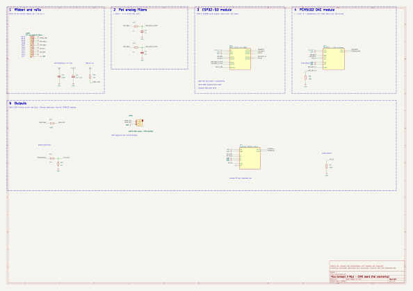
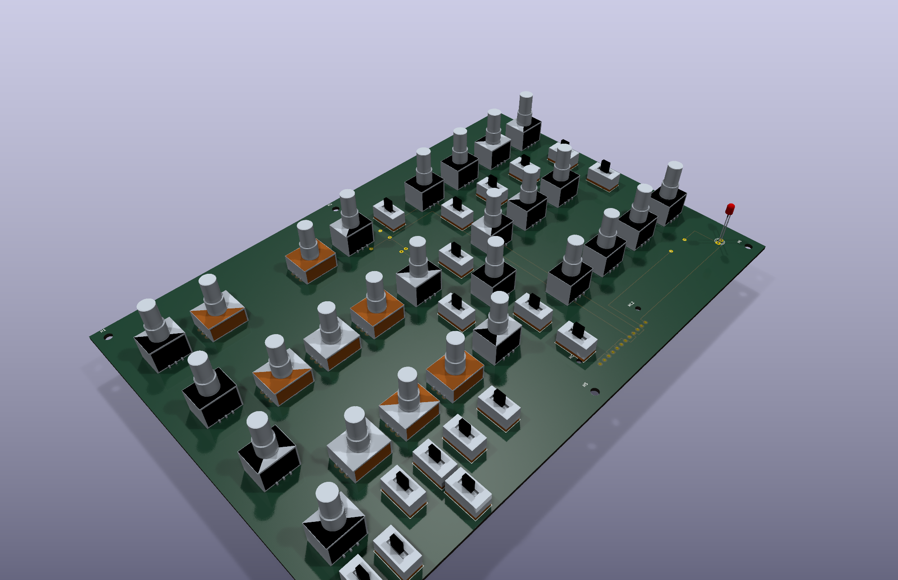
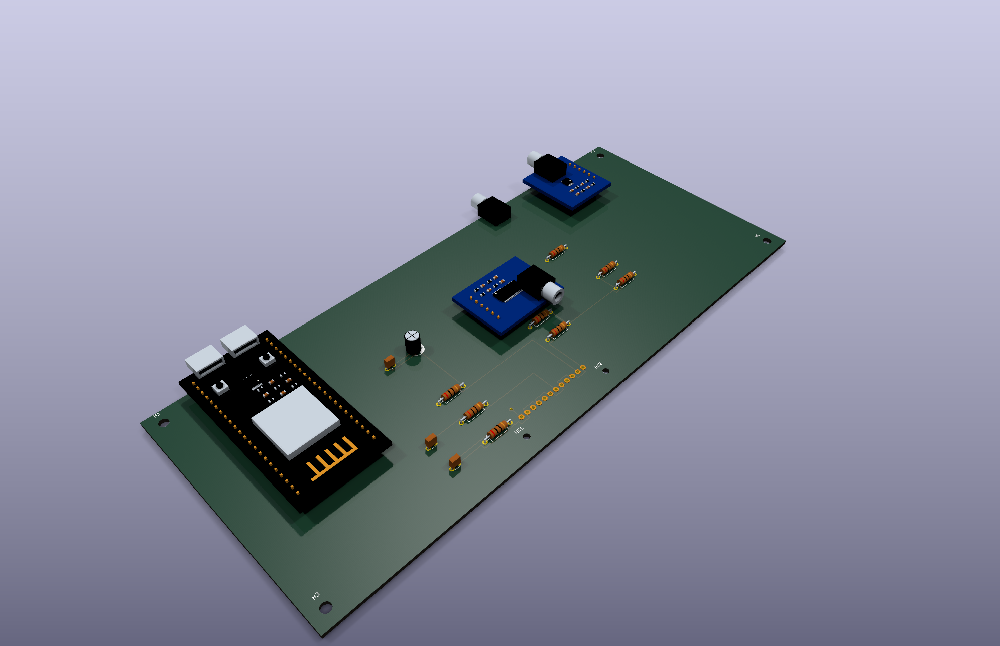

Compact D R0.5
Two-board sloped digital synthesizer: ESP32-S3 sound engine, 19 pots, 8 encoders, 17 switches.
1. Overview
A control board (220 × 150 mm) sits under a 15° aluminium panel and carries every knob, encoder and switch. A flat core board (210 × 90 mm) carries the ESP32-S3, the DAC and the headphone amplifier. A single soldered 12-wire ribbon joins them. Both boards are intended to be milled from copper-clad plate.

Assembled, front

Exploded: panel, control PCB, rails, electronics PCB
2. Power
Power enters at one point: the USB-C port of the ESP32 module that is wired to the USB-UART chip (core board).


Power distribution (click for full size)
- USB 5 V becomes
SYS_5Vand feeds the ESP module and the DAC; CC2 (10 µF) buffers it. - The ESP module's regulator makes
3V3for the headphone amp, CC1, and, through ribbon wire 1, the whole control board. - Ground returns on ribbon wires 2, 4, 6, 8, 10 and 12.
- Budget: pots about 6.3 mA at 3.3 V; control board allowance 50 mA (an estimate, not a measurement).
3. Signal flow


Signal flow (click for full size)
Controls → ESP
- Pots: each sits between 3V3 and GND; the wiper (
RVn_W) goes to one mux input. Four select linesMUX_S0..S3(MCP outputs on IO1 and IO2) choose the channel for both muxes. The selected wiper leaves onPOT_ADC1orPOT_ADC2, crosses the ribbon, passes a 1 kΩ/1 nF filter and enters GPIO4 or GPIO5. - Switches and encoders: each contact pulls an MCP input to GND against the chip's internal pull-up. A change pulls the shared open-drain
PANEL_IRQlow (10 kΩ pull-up RP5), so the firmware only reads I²C when something moved. - I²C: GPIO1/GPIO2 at 100 kHz (400 kHz after testing). RP3/RP4 pull-ups are DNP.
Audio
- ESP → DAC over I²S (GPIO15 BCLK, GPIO16 LRCLK, GPIO17 TX); PLL mode, I²S format.
- DAC left →
MAIN_RAW→ RA3 100 Ω → rear jack (tip and ring tied, sleeve GND). - DAC right →
PHONES_RAW→ RA4/RA5 divider →HP_FEED→ TPA6132 inputs → the module's own headphone jack. - GPIO41
DAC_MUTE_Ndrives XSMT; GPIO40HP_ENdrives the amp CTRL. Both have 100 kΩ pull-downs.
4. Ribbon (JPANEL ↔ JCORE)
Pin 1 to pin 1; both ends are identical.
| Wire | Net | Role |
|---|---|---|
| 1 | 3V3 | control board supply |
| 2 | GND | return |
| 3 | I2C_SDA | ESP GPIO1 ↔ MCP SDA |
| 4 | GND | return |
| 5 | I2C_SCL | ESP GPIO2 ↔ MCP SCL |
| 6 | GND | return |
| 7 | POT_ADC1 | MX1 SIG → filter → GPIO4 |
| 8 | GND | return |
| 9 | POT_ADC2 | MX2 SIG → filter → GPIO5 |
| 10 | GND | return |
| 11 | PANEL_IRQ | MCP INTA (wire-OR) → GPIO10 |
| 12 | GND | return |
5. Core board port map
| ESP32-S3 pin | Net | Goes to | Direction |
|---|---|---|---|
| 5V (USB) | SYS_5V | DAC VIN, CC2 bulk cap | power in from USB-UART port |
| 3V3 | 3V3 | ribbon 1, HP1 VCC, CC1 | power out (module regulator) |
| GPIO1 | I2C_SDA | ribbon 3 → MCP SDA | I²C data |
| GPIO2 | I2C_SCL | ribbon 5 → MCP SCL | I²C clock |
| GPIO4 | POT_ADC1_FILTER | RA1/CA1 ← ribbon 7 ← MX1 | ADC in |
| GPIO5 | POT_ADC2_FILTER | RA2/CA2 ← ribbon 9 ← MX2 | ADC in |
| GPIO10 | PANEL_IRQ | ribbon 11 ← MCP INTA (RP5 pull-up) | interrupt in |
| GPIO15 | I2S_BCLK | DAC BCK | I²S out |
| GPIO16 | I2S_LRCLK | DAC LCK | I²S out |
| GPIO17 | I2S_TX | DAC DIN | I²S out |
| GPIO40 | HP_EN | HP1 CTRL (RA7 pull-down) | output |
| GPIO41 | DAC_MUTE_N | DAC XSMT (RA6 pull-down) | output |
| native USB | — | USB-MIDI keyboard (host mode), power OPEN | USB host |
Module pin names are functional. Physical header positions are unverified.
6. Control board port map
I/O expanders (MCP23017 modules)
| Module | I²C address | Strap A0 / A1 / A2 | GPA7 / GPB7 outputs |
|---|---|---|---|
| IO1 | 0x20 | GND / GND / GND | MUX_S0 / MUX_S1 |
| IO2 | 0x21 | 3V3 / GND / GND | MUX_S2 / MUX_S3 |
| IO3 | 0x22 | GND / 3V3 / GND | unused (low) |
Contacts use GPA0–GPA6 and GPB0–GPB6. INTA of each chip goes to PANEL_IRQ, INTB is unused, RESET goes to IO_RESET.
Potentiometers (19) → analog multiplexers
| Pot | Function | Mux | Channel | Net |
|---|---|---|---|---|
| RV1 | TUNE (master.tune) | MX1 | 0 | RV1_W |
| RV2 | GLIDE (glide.time) | MX1 | 1 | RV2_W |
| RV3 | MODULATION MIX (mod.mix) | MX1 | 2 | RV3_W |
| RV4 | LFO RATE (lfo.rate) | MX1 | 3 | RV4_W |
| RV5 | VOLUME (mix.osc1) | MX1 | 4 | RV5_W |
| RV6 | VOLUME (mix.osc2) | MX1 | 5 | RV6_W |
| RV7 | VOLUME (mix.osc3) | MX1 | 6 | RV7_W |
| RV9 | NOISE VOLUME (mix.noise) | MX1 | 7 | RV9_W |
| RV10 | CUTOFF FREQUENCY (filter.cutoff) | MX1 | 8 | RV10_W |
| RV11 | EMPHASIS (filter.resonance) | MX1 | 9 | RV11_W |
| RV12 | AMOUNT OF CONTOUR (filter.env_amount) | MX1 | 10 | RV12_W |
| RV13 | ATTACK TIME (env.filter.attack) | MX1 | 11 | RV13_W |
| RV14 | DECAY TIME (env.filter.decay) | MX1 | 12 | RV14_W |
| RV15 | SUSTAIN LEVEL (env.filter.sustain) | MX1 | 13 | RV15_W |
| RV16 | ATTACK TIME (env.amp.attack) | MX1 | 14 | RV16_W |
| RV17 | DECAY TIME (env.amp.decay) | MX1 | 15 | RV17_W |
| RV18 | SUSTAIN LEVEL (env.amp.sustain) | MX2 | 0 | RV18_W |
| RV19 | VOLUME (output.main_volume) | MX2 | 1 | RV19_W |
| RV20 | PHONES (output.phones_volume) | MX2 | 2 | RV20_W |
Unused MX2 inputs C3–C15 are grounded. EN is tied low on both muxes.
Encoders (8)
| Encoder | Function | A / B / push → MCP port |
|---|---|---|
| E1 | RANGE (osc1.range) | A→IO1.GPA0, B→IO1.GPA1, SW1→IO1.GPA2 |
| E2 | WAVEFORM (osc1.wave) | A→IO1.GPA3, B→IO1.GPA4, SW1→IO1.GPA5 |
| E3 | RANGE (osc2.range) | A→IO1.GPA6, B→IO1.GPB0, SW1→IO1.GPB1 |
| E4 | FREQUENCY (osc2.detune) | A→IO1.GPB2, B→IO1.GPB3, SW1→IO1.GPB4 |
| E5 | WAVEFORM (osc2.wave) | A→IO1.GPB5, B→IO1.GPB6, SW1→IO2.GPA0 |
| E6 | RANGE (osc3.range) | A→IO2.GPA1, B→IO2.GPA2, SW1→IO2.GPA3 |
| E7 | FREQUENCY (osc3.detune) | A→IO2.GPA4, B→IO2.GPA5, SW1→IO2.GPA6 |
| E8 | WAVEFORM (osc3.wave) | A→IO2.GPB0, B→IO2.GPB1, SW1→IO2.GPB2 |
Switches (17)
| Switch | Function | Net | MCP port |
|---|---|---|---|
| S1 | Osc mod (mod.osc_enable) | S1_ON | IO2.GPB3 |
| S2 | Osc3 / EG (mod.source_a) | S2_ON | IO2.GPB4 |
| S3 | Noise / LFO (mod.source_b) | S3_ON | IO2.GPB5 |
| S4 | Glide on (glide.enable) | S4_ON | IO2.GPB6 |
| S5 | Decay on (env.decay_enable) | S5_ON | IO3.GPA0 |
| S6 | LFO shape (lfo.shape) | S6_ON | IO3.GPA1 |
| S7 | Osc3 keyboard (osc3.keyboard) | S7_ON | IO3.GPA2 |
| S8 | Osc 1 on (mix.osc1_enable) | S8_ON | IO3.GPA3 |
| S9 | Osc 2 on (mix.osc2_enable) | S9_ON | IO3.GPA4 |
| S10 | Osc 3 on (mix.osc3_enable) | S10_ON | IO3.GPA5 |
| S12 | Noise on (mix.noise_enable) | S12_ON | IO3.GPA6 |
| S13 | White / Pink (noise.type) | S13_ON | IO3.GPB0 |
| S14 | Filter mod (mod.filter_enable) | S14_ON | IO3.GPB1 |
| S15 | Keytrack 1 (filter.keytrack1) | S15_ON | IO3.GPB2 |
| S16 | Keytrack 2 (filter.keytrack2) | S16_ON | IO3.GPB3 |
| S17 | Main on (output.main_enable) | S17_ON | IO3.GPB4 |
| S18 | A-440 (output.a440) | S18_ON | IO3.GPB5 |
7. Schematics
Generated from the design data with standard KiCad symbols; the netlist matches the design data. Module pin numbers are placeholders until the headers are measured.
Control (SVG)Control (PDF) Core (SVG)Core (PDF)


Control board

Core board
8. 3D and CAD

Control PCB

Core PCB

Rear: jacks and USB

Interior: sloped control board above the flat core board
Downloads: control-board.stlcontrol-assembly.stl core-board.stlcore-assembly.stl Full CAD (STEP)
Renders use reconstructed component models, not certified vendor CAD.
9. Status and open work
- Footprints: done for EC11 encoders and the slide switches (4.7 mm pitch). The pot footprint is next, using the Alpha RD901F datasheet as a proxy. The ESP, DAC, headphone amp, MCP and mux modules and the main jack still need measurements.
- Layout: the new switch pads expose conflicts for S4, S10 and S13 (a GND track through pads, mounting-hole overlap). The routed tracks pre-date the real pads.
- Electrical: keyboard VBUS source, 3.3 V regulator headroom, module pull-ups and straps, audio coupling and gain.
- Milling: process rules (bit size, clearances) and the plated-through-hole substitute are not yet checked against the layout.
10. Files
| What | Where |
|---|---|
| Plan (Markdown, source of this page) | docs/plan-r0.5.md |
| Architecture and ribbon detail | hardware/split-r0.5/architecture.md |
| Unverified items to measure | hardware/split-r0.5/remaining-verification.md |
| Decisions (Dutch) | docs/decisions.md |
| KiCad projects | hardware/split-r0.5/control/, hardware/split-r0.5/core/ |
| Reports (audit, DRC, ERC) | hardware/split-r0.5/reports/ |
| Enclosure | mechanical/split-r0.5/README.md |
| Rebuild this page | python3 scripts/build_docs_r05.py |
| Rebuild schematics / STLs / switch footprint | scripts/build_schematics_r05.py, scripts/export_stl_r05.py, scripts/build_switch_footprint_r05.py |